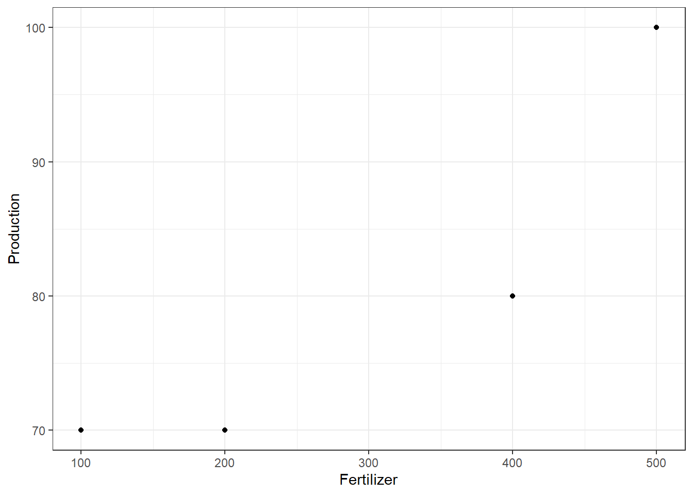
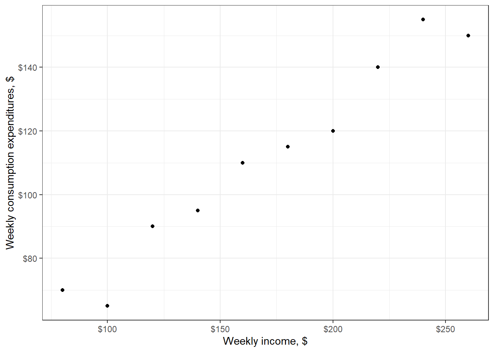

3 Simple Linear Regression
Definition
Quantifying dependency of a normal response on quantitative explanatory variable
Example
Production (Bushels/acre) of a crop depends on the amount of Fertilizer (Kg/acre) being used.
| Fertilizer (Kg/acre) | Production (Bushels/acre) |
|---|---|
| 100 | 70 |
| 200 | 70 |
| 400 | 80 |
| 500 | 100 |
Fertilizer Production
1 100 70
2 200 70
3 400 80
4 500 100# Fertilizer (Kg/acre)
# Production (Bushels/acre)
Fertilizer <- c(100, 200, 400, 500)
Production <- c( 70, 70, 80, 100)
df1 <- data.frame(Fertilizer, Production)
df1
p1 <-
ggplot(data = df1, mapping = aes(x = Fertilizer, y = Production)) +
geom_point() +
labs(x = "Fertilizer", y = "Production") +
theme_bw()
print(p1)
Call:
lm(formula = Production ~ Fertilizer, data = df1)
Residuals:
1 2 3 4
4 -3 -7 6
Coefficients:
Estimate Std. Error t value Pr(>|t|)
(Intercept) 59.00000 7.95299 7.419 0.0177 *
Fertilizer 0.07000 0.02345 2.985 0.0963 .
---
Signif. codes: 0 '***' 0.001 '**' 0.01 '*' 0.05 '.' 0.1 ' ' 1
Residual standard error: 7.416 on 2 degrees of freedom
Multiple R-squared: 0.8167, Adjusted R-squared: 0.725
F-statistic: 8.909 on 1 and 2 DF, p-value: 0.0963fm1 <- lm(formula = Production ~ Fertilizer, data = df1)
summary(fm1)
Interpretation
We fitted a linear model (estimated using OLS) to predict Production with
Fertilizer (formula: Production ~ Fertilizer). The model explains a
statistically not significant and substantial proportion of variance (R2 =
0.82, F(1, 2) = 8.91, p = 0.096, adj. R2 = 0.72). The model's intercept,
corresponding to Fertilizer = 0, is at 59.00 (95% CI [24.78, 93.22], t(2) =
7.42, p = 0.018). Within this model:
- The effect of Fertilizer is statistically non-significant and positive (beta
= 0.07, 95% CI [-0.03, 0.17], t(2) = 2.98, p = 0.096; Std. beta = 0.90, 95% CI
[-0.40, 2.21])
Standardized parameters were obtained by fitting the model on a standardized
version of the dataset. 95% Confidence Intervals (CIs) and p-values were
computed using a Wald t-distribution approximation.Analysis of Variance Table
Response: Production
Df Sum Sq Mean Sq F value Pr(>F)
Fertilizer 1 490 490 8.9091 0.0963 .
Residuals 2 110 55
---
Signif. codes: 0 '***' 0.001 '**' 0.01 '*' 0.05 '.' 0.1 ' ' 1anova(fm1)
Interpretation
Analysis of Variance Table (Type III SS)
Model: Production ~ Fertilizer
SS df MS F PRE p
----- --------------- | ------- - ------- ----- ----- -----
Model (error reduced) | 490.000 1 490.000 8.909 .8167 .0963
Error (from model) | 110.000 2 55.000
----- --------------- | ------- - ------- ----- ----- -----
Total (empty model) | 600.000 3 200.000 supernova(fm1)
Example
Weekly Expenditures depends on Weekly Income.
| Weekly Income ($) | Weekly Expenditures ($) |
|---|---|
| 80 | 70 |
| 100 | 65 |
| 120 | 90 |
| 140 | 95 |
| 160 | 110 |
| 180 | 115 |
| 200 | 120 |
| 220 | 140 |
| 240 | 155 |
| 260 | 150 |
Income Expenditures
1 80 70
2 100 65
3 120 90
4 140 95
5 160 110
6 180 115
7 200 120
8 220 140
9 240 155
10 260 150# Weekly Income ($) of a Family
# Weekly Expenditures ($) of a Family
Income <- seq(from = 80, to = 260, by = 20)
Expenditures <- c(70, 65, 90, 95, 110, 115, 120, 140, 155, 150)
df3 <- data.frame(Income, Expenditures)
df3
p3 <-
ggplot(data = df3, mapping = aes(x = Income, y = Expenditures)) +
geom_point() +
scale_x_continuous(labels = scales::dollar) +
scale_y_continuous(labels = scales::dollar) +
labs(x = "Weekly income, $", y = "Weekly consumption expenditures, $") +
theme_bw()
print(p3)
Call:
lm(formula = Expenditures ~ Income, data = df3)
Residuals:
Min 1Q Median 3Q Max
-10.364 -4.977 1.409 4.364 8.364
Coefficients:
Estimate Std. Error t value Pr(>|t|)
(Intercept) 24.45455 6.41382 3.813 0.00514 **
Income 0.50909 0.03574 14.243 0.000000575 ***
---
Signif. codes: 0 '***' 0.001 '**' 0.01 '*' 0.05 '.' 0.1 ' ' 1
Residual standard error: 6.493 on 8 degrees of freedom
Multiple R-squared: 0.9621, Adjusted R-squared: 0.9573
F-statistic: 202.9 on 1 and 8 DF, p-value: 0.0000005753fm3 <- lm(formula = Expenditures ~ Income, data = df3)
summary(fm3)
Interpretation
We fitted a linear model (estimated using OLS) to predict Expenditures with
Income (formula: Expenditures ~ Income). The model explains a statistically
significant and substantial proportion of variance (R2 = 0.96, F(1, 8) =
202.87, p < .001, adj. R2 = 0.96). The model's intercept, corresponding to
Income = 0, is at 24.45 (95% CI [9.66, 39.24], t(8) = 3.81, p = 0.005). Within
this model:
- The effect of Income is statistically significant and positive (beta = 0.51,
95% CI [0.43, 0.59], t(8) = 14.24, p < .001; Std. beta = 0.98, 95% CI [0.82,
1.14])
Standardized parameters were obtained by fitting the model on a standardized
version of the dataset. 95% Confidence Intervals (CIs) and p-values were
computed using a Wald t-distribution approximation.Analysis of Variance Table
Response: Expenditures
Df Sum Sq Mean Sq F value Pr(>F)
Income 1 8552.7 8552.7 202.87 0.0000005753 ***
Residuals 8 337.3 42.2
---
Signif. codes: 0 '***' 0.001 '**' 0.01 '*' 0.05 '.' 0.1 ' ' 1anova(fm3)
Interpretation
The ANOVA suggests that:
- The main effect of Income is statistically significant and large (F(1, 8) =
202.87, p < .001; Eta2 = 0.96, 95% CI [0.89, 1.00])
Effect sizes were labelled following Field's (2013) recommendations. Analysis of Variance Table (Type III SS)
Model: Expenditures ~ Income
SS df MS F PRE p
----- --------------- | -------- - -------- ------- ----- -----
Model (error reduced) | 8552.727 1 8552.727 202.868 .9621 .0000
Error (from model) | 337.273 8 42.159
----- --------------- | -------- - -------- ------- ----- -----
Total (empty model) | 8890.000 9 987.778 supernova(fm3)